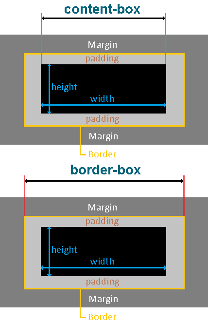

|
Блочная модель в CSS
CSS свойство box-sizing используется для изменения, применяемой по умолчанию CSS модели, с помощью которой вычисляются ширина и высота элементов. Значения свойства существуют следующие:
- content-box (по умолчанию)
- border-box
- initial (устанавливает свойство в значение по умолчанию)
- inherit (указывает, что значение наследуется от родительского элемента)
margin - наружный отступ элемента (за границей). Если у родителя элемента не задан padding-top, то margin-top у ро дителя и самого элемента выбирается иаксимальный из всех. padding - внутренний отступ элемента (между контентом о границей)
Свойство со значением margin: 0 auto; если элемент блочный выравнивает его по середине, а если же элемент строчно-блочный значение auto не работает.
- При использовании значения content-box, значения свойства width и height, а так же min-width, max-width, min-height и max-height включают в себя только содержание элемента. Такие свойства как border, padding (внутренние отступы) или margin (внешние) отступы не входят.
- При использовании значения border-box значения свойства width и height, а так же min-width, max-width, min-height и max-height включают в себя содержание элемента, border и padding (внутренние отступы). А margin (внешние отступы), как и при использовании content-box в это число не входят.
|
 |
| Свойство |
Значение |
Описание |
| border-width |
px |
ширина границы (top, right, bottom, left) |
| border-style |
none, hidden, dotted, dashed, solid, double, groove, ridge, inset, outset |
стиль границы |
| border-color |
green, #код(rgb), hsl(0, 100%, 50%), hsla(0, 100%, 50%, 0.5) |
цвет границы |
| border |
| -top |
-width |
| -right |
-style |
| -bottom |
-color |
|
px цвет стиль(из свойств border-width или -style) |
задается одной границе |
| display |
| inline |
элементы располагаются на той же строке, последовательно, ширина и высота элемента определяются по содержимому (поменять их нельзя) |
| inline-block |
располагается в строке, размер устанавливается по содержимому, во всём остальном – это блок (работают свойства width / height) |
| block |
блочные элементы располагаются один над другим, вертикально. Блок стремится расшириться на всю доступную ширину (можно указать ширину и высоту явно) |
|
|